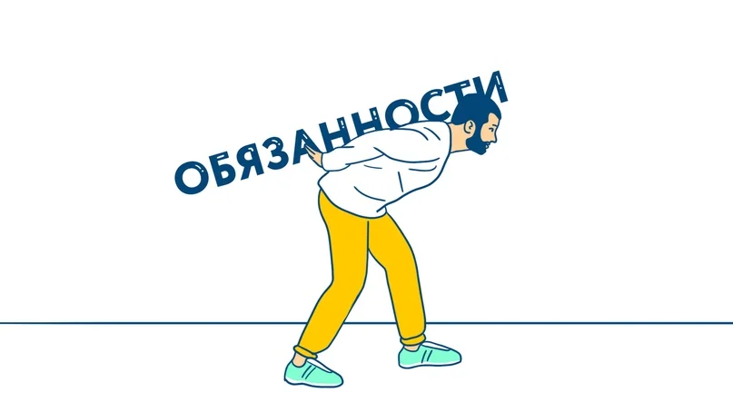

Александр Сорге — об «Алых парусах», уроках профориентации и светлом будущем
Вот и прозвенел крайний звонок — настал радостный момент для всех учителей, ведь теперь они могут, наконец, выпроводить опизденевших им старшеклассников за порог и скинуть их на плечи директора какой-нибудь шараги. Все остальные встречают этот день с натянутой улыбкой, ведь за воротами школы вроде как начинается взрослая, самостоятельная жизнь, а «взрослая жизнь» в России звучит как приговор. Причем пожизненный. Ибо черт знает, что ожидает новоиспеченного матроса или матроску, ведущего свою байдарку жизни сквозь этот окиян экзистенциального ужаса.

Конечно, университеты дают некую отсрочку от этого приговора и чувство мнимого благополучия, однако всего на пару лет. В Петербурге же выпускной дополняется национальным шоу под названием «Алые паруса», призванным вдохнуть во вчерашних школьников веру в лучшее завтра. Мол, раз грезы Ассоль стали явью, — и у тебя все получится, ведь, как говорят топ-менеджеры «Газпрома», «мечты сбываются».
Алкогольное цунами дважды прибивало меня к гранитной набережной, где свершалось это действо. Впервые проходка досталась мне как экс-школьнику от государства. Второй же раз меня занесло в центр города случайно. Алкоголь в магазинах не продавался, а бухать в барах было дорого, и я решил выменять билет на пятисотрублевую купюру у какого-то мутного чувака рядом с «Галереей». И каждый раз, попадая в гущу праздника, я видел одно и то же зрелище. Очередная говорящая шляпа с усами, которая по какому-то магическому недоразумению избирательной комиссии стала губернатором Санкт-Петрограда, говорила со сцены своим усатым ртом до одури банальные слова: про гордость и надежду нации, про великое будущее и, конечно же, про пресловутое путешествие во взрослую жизнь. Хотя вместо сладких речей губернатор лучше бы провел пятиминутку профориентации, ибо в школе этим никто не занимался. Серьезно, у нас в школе уроки, которые, по идее, должны помочь тебе определиться с будущим, бывали пару раз в год. Вся суть их заключалась в прохождении тестов чуть ли не из «Космо». А вела их психологиня предбальзаковского возраста, которой было до пизды, что тебе там интересно и чем ты там хочешь заниматься.
Школьная программа плоха не своими квадратными уравнениями, которые «нипригадятсявжизни», ведь они заставляют маринованные в «ягуаре» и подкопченные дешевыми сигаретами мозги юнца худо-бедно развиваться. Она плоха тем, что, помимо этих самых уравнений, не дает больше ничего.
Никто не объясняет школьнику, почему не стоит брать микрозаймы, или что делать, если ты потерял паспорт. Но, что хуже, никто не объясняет подростку, что ему делать со своей жизнью: как понять, чем он хочет заниматься, как развить и где можно применить эти навыки. За всеми этими громкими спорами вокруг ЕГЭ и учебников упускается главный вопрос: может, школа должна готовить человека еще и к реальному, а не только к абстрактному университетскому миру?
Конечно, сегодня модно кукарекать, что школа вовсе не для этого, что нужно саморазвиваться, и вообще, «государство вам ничего не должно». Но бетонные коробки школ пока что стоят почти в каждом дворе, и в их чреве все так же 11 лет варятся дети. Так раз у государства хватает желания организовать такие нужные всем уроки православия, почему бы не найти время и для нормальных занятий по профориентации? Ведь в результате мы получаем армию абитуриентов, которые не просто не понимают, кем они будут после получения цветной картонки, — они не понимают, зачем вообще им нужно высшее образование.
Гордое звание бакалавра обретается по принципу «чтобы как у всех нормальных людей», «потому что мама сказала», «чтобы откосить от армии» и лишь в исключительных случаях — потому что человек действительно хочет трудиться в определенной сфере. Как итог всего этого — почти каждый третийжитель необъятной работает не по специальности.
Конечно, в тот день рядом со мной в толпе были те, кто уже поминутно распланировал свою жизнь (или за кого это сделали родители). Были те, кто окончит школу, окончит универ, кончит в свою телку (не все же Поперечному шутки пиздить) и будет катить по этой колее оставшиеся 50 лет. Но было много и тех, кто плохо понимал, куда грести в океане возможностей.

Тем не менее в какой-то момент вся эта орда вываливается на набережную. Кульминация. И вот ты видишь этот величественный корабль с красными парусами в ярких лучах софитов, который под грохот фанфар величаво входит в петровскую акваторию. Вместе с тобой с разинутыми ртами на него смотрят сотни вчерашних школьников со всей страны. И в эту теплую летнюю ночь правда верится, что все возможно, что до этой мечты с красными парусами и правда можно доплыть, ведь вот она, рукой подать, а воды Невы не такие уж и холодные.
Но затем бриг с символичным названием «Россия» медленно разворачивается и уплывает обратно, а ты так и остаешься стоять на заблеванной набережной. И никакой капитан Грей не возьмет тебя на борт, ведь билеты на этот корабль распределяются строго по партийным спискам.
И когда алкогольные спириты отпускают твое тело, наступает трезвость, а прекрасный корабль оказывается яхтой очередного чиновника, который машет тебе с палубы ручкой и рассказывает, что «жить стало лучше, жить стало веселее». И все бы ничего, но тех, кто дерзнет построить шхуну своей мечты с парусами другого цвета, посадят на якорь или выдавят из территориальных вод. А сам корабль федеральные каперы либо экспроприируют, либо просто пустят ко дну. Примеров масса: от Чичваркина и Дурова до свежего дела против основателя «Рольфа».
Неудивительно, что у многих сегодня складывается полное ощущение, будто бы урвать корку хлеба можно, только присосавшись к госкормушке. И речь здесь не о работе учителем или научным сотрудником. Взять хотя бы этих ваших блогеров. Будь лояльным, говори правильные вещи, погуляй по парку, порекламируй выборы, и тебе не только скинут пару лямов на карту, но и, возможно, покажут тебя по федеральным телеканалам в одной передаче с президентом! А Юра Хованский — профессиональный стендапер, талантливый рэпер и лицо российского YouTube — вообще недавно стал помощником депутата.
Когда ты не знаешь, чем хочешь заниматься, или тебе просто все равно, что делать — бить ли людей на митинге за зарплату или рисовать подписи за кандидатов на выборах — решение устроиться на госкорабль батраком выглядит вполне логичным. Ведь там, глядишь, и на палубу выбраться можно будет да досочку от мачты отпилить — чем не Russian dream? Проблема в том, что выбора-то особого и нет: этот корабль видится единственным спасательным кругом в бурном северном море. Да и размеры казенной посудины гораздо больше, чем кажется на первый взгляд.
Мы действительно живем в уникальной стране: на эдаком «русском поле экспериментов», где порой после жестоких опытов появляются уникальные артефакты, словно бы прямиком из Зоны, описанной Стругацкими. Например, экономика Шредингера, которая находится в состоянии суперпозиции: она вроде бы одновременно и рыночная, и командная. Доля государства в российской экономике достигает от 45 (данные РАНХиГС) до 70% (данные ФАС). Две трети банковского сектора также заняты государством. «Госхолдинги в России контролируют целые отрасли и фактически превратились в министерства», а оставшееся поделено олигархами-феодалами, лояльными к главному сюзерену. Показательнее всего ситуация в СМИ: многие газеты и телеканалы носят у нас гордое звание независимых, однако штраф в 22 миллиона получает только издание Евгении Альбац. Не будем говорить, почему столь большая доля государства отравляет экономику любой страны, нам интереснее другое.
Приходя работать в любую корпорацию с приставкой рос-, гос- или росгос-, попадая на поля очередного феодала, ты обязуешься неукоснительно разделять курс партии и участвовать в пятиминутках ненависти. И черт бы с ним, не так уж это и страшно на самом деле. Если бы не одно «но»: присягая феодалу на верность, ты обязуешься жить в его реальности.
Есть одна «реальная реальность», где население нищает от года к году, а есть «реальность на бумаге», где в каждую клеточку вписана нужная красивая циферка.
И поступать и говорить ты должен так, чтобы твои действия полностью вписывались в ту, бумажную реальность. А иначе тебя уволят, как аналитика Сбербанка, который написал в отчете об огромных долгах «Роснефти» и о том, что контракты «Газпрома» выгодны только подрядчикам.
Это формирует настоящее двоемыслие: вроде и понятно, что кругом все только беднеют, да и вообще все не так хорошо, как на ТВ показывают, но ты продолжаешь действовать, исходя из той, искусственной реальности. Вон Кудрин недавно тоже проговорился, что бедность скоро приведет к «социальному взрыву». Но потом опомнился, осознал, в каком мире живет, и извинился за «эмоциональные проявления». Причем прививать это двоемыслие часто начинают еще в университетских аудиториях. Например, увольняя профессора, который рисует не столь радужное будущее для политического руководства. Или признавая дипломную работу красноярского выпускника о долгах региона ненаучной.

И это плохо. И речь здесь вовсе не о банальной свободе слова, подавлении инакомыслия или торговле принципами — все это чушь по сравнению с главной проблемой. Вы можете объявить себя второй инкарнацией Ньютона, напридумывать какие угодно законы физики, написать целые трактаты по ним и свято в них верить. Вы даже можете построить самолет, исходя из «своих» законов небесной механики и, возможно, он даже взлетит. Есть лишь одна проблема: он непременно разобьется. При таком масштабе вмешательства государства в экономику проповедуемое двоемыслие может стать самоубийственным.
Одно дело, когда диктор внушает по радио, что над империей светит солнце, в то время как паводки смывают целые деревни, — пропагандистская ложь не сильно влияет на ход небесных тел. Но когда под эту бумажную реальность подгоняются финансовые отчеты, когда главу Росстата увольняют за «недостаточный оптимизм», и после этого цифры начинают показывать не реальный, а дивный новый мир, — это все может закончиться катастрофой. Пилоты, воспользовавшись золотыми парашютами, может, и спасутся. А пассажиры сгорят в адском керосиновом пламени. Учитывая то, что почти все население либо летит на этом разваливающемся кукурузнике, либо его обслуживает тем или иным образом, спастись не удастся никому.
Потом был салют. Чертовски красивый. Настолько, что хотелось плакать под гигантскими огненными звездами, искрящимися пороховыми кометами и разноцветными рукотворными протуберанцами. «Алые паруса» действительно заставляют хоть на миг, но поверить в сказку. Но самому жить в сказке и заставлять жить в ней других опасно.
Какого бы цвета ни были твои паруса, они не поднимут тебя в воздух, когда безумный капитан ведет корабль на рифы.
Особенно когда этот корабль — ковчег, за который держатся 144 миллиона человек. Ковчег, куда мечтают попасть многие, потому что крупных судов в порту больше не видно. И потому что этот ковчег выглядит добротным источником пиломатериалов. Можно долго биться с коррупционной гидрой, отрубая одну голову за другой. Но пока государственный аппарат еще в отрочестве воспринимается как огромная лохань с денежным комбикормом, к которой тем или иным способом можно присосаться, все эти россказни про борьбу с казнокрадством — лишь громкая отрыжка.
И пока ситуация не начнет меняться, выпускникам запомнится не эта отрыжка, не сладкие речи губернатора, а, скорее, слова из песни Лагутенко, который пел на сцене после чиновника: «Уходим, уходим, уходим, наступят времена почище».